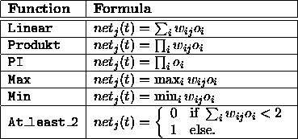

The following site, activation, and output functions are already predefined. Future releases of the kernel will have additional transfer functions.

Several other site functions have been implemented for the ART models in SNNS: At_least_2, At_least_1, At_most_0, Reciprocal. These functions normally are not useful for other networks. So they are mentioned here, but not described in detail. For more information please refer to the section about the corresponding ART model in SNNS.
Several other activation functions have been implemented for the ART
models in SNNS: Less_than_0, At_most_0,
At_least_2, At_least_1, Exactly_1,
ART1_NC, ART2_Identity,
ART2_Rec, ART2_NormP, ART2_NormV, ART2_NormW,
ART2_NormIP,
ART2_Rst, ARTMAP_NCa, ARTMAP_NCb, ARTMAP_DRho.
These functions normally are not useful for other networks. So they
are mentioned here, but not described in detail. For cascade
correlation and time delay networks the following modified versions of
regular activation functions have been implemented:
RCC_logistic, RCC_LogisticSym, RCC_Tanh, RCC_Linear,
TD_Logistic,
TD_Elliott. They behave like the ordinary functions
with the same name body.

Two other output functions have been implemented for ART2 in SNNS: ART2_Noise_PLin and ART2_Noise_ContDiff These functions are only useful for the ART2 implementation So they are mentioned here, but not described in detail.